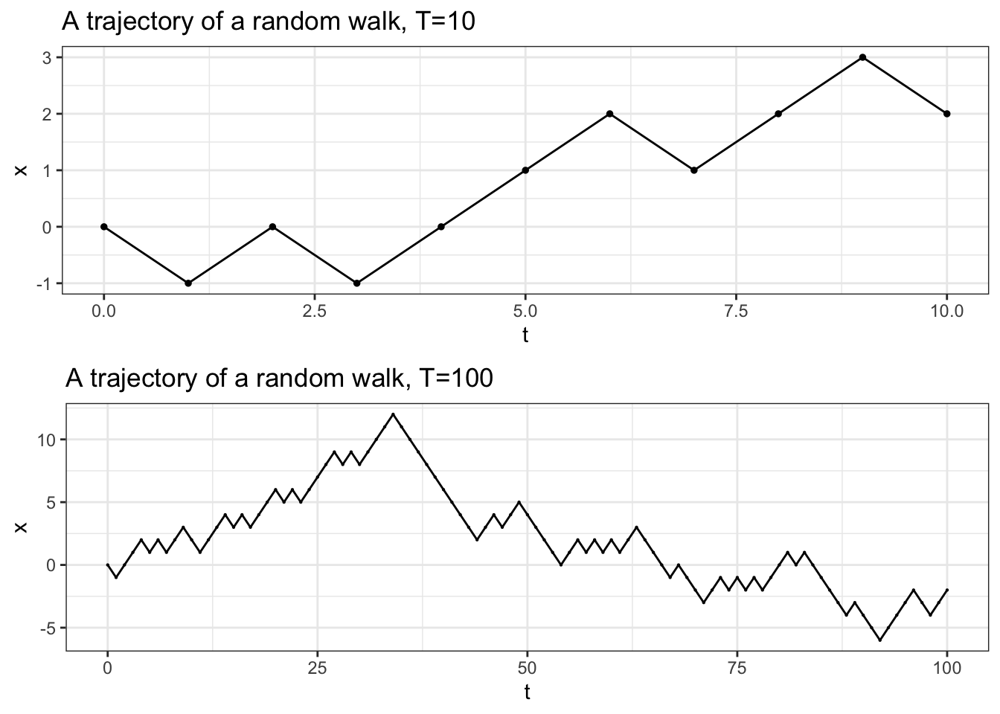

Chapter 3 Random Walks
3.1 What are stochastic processes?
A stochastic process is a sequence - finite or infinite - of random variables. We usually write \(\{X_n\}_{n\in{\mathbb{N}}}\) or \(\{X_n\}_{0\leq n \leq T}\), depending on whether we are talking about an infinite or a finite sequence. The number \(T\in {\mathbb{N}}_0\) is called the time horizon, and we sometimes set \(T=+\infty\) when the sequence is infinite. The index \(n\) is often interpreted as time, so that a stochastic process can be thought of as a model of a random process evolving in time. The initial value of the index \(n\) is often normalized to \(0\), even though other values may be used. This it usually very clear from the context.
It is important that all the random variables \(X_0, X_1,\dots\) “live” on the same sample space \(\Omega\). This way, we can talk about the notion of a trajectory or a sample path of a stochastic process: it is, simply, the sequence of numbers \[X_0(\omega), X_1(\omega), \dots\] but with \(\omega\in \Omega\) considered “fixed”. In other words, we can think of a stochastic process as a random variable whose value is not a numbers, but sequence of numbers. This will become much clearer once we introduce enough examples.
3.2 The simple symmetric random walk
A stochastic process \(\{X\}_{n\in{\mathbb{N}}_0}\) is said to be a simple symmetric random walk if
\(X_0=0\),
the random variables \(\delta_1 = X_1-X_0\), \(\delta_2 = X_2 - X_1\), …, called the steps of the random walk, are independent
each \(\delta_n\) has a coin-toss distribution, i.e., its distribution is given by \[{\mathbb{P}}[ \delta_n = 1] = {\mathbb{P}}[ \delta_n=-1] = \tfrac{1}{2} \text{ for each } n.\]
Some comments:
This definition captures the main features of an idealized notion of a particle that gets shoved, randomly, in one of two possible directions, over and over. In other words, these “shoves” force the particle to take a step, and steps are modeled by the random variables variables \(\delta_1,\delta_2, \dots\). The position of the particle after \(n\) steps is \(X_n\); indeed, \[X_n = \delta_1 + \delta_2 + \dots + \delta_n \text{ for }n\in {\mathbb{N}}.\] It is important to assume that any two steps are independent of each other - the most important properties of random walks depend on this in a critical way.
Sometimes, we only need a finite number of steps of a random walk, so we only care about the random variables \(X_0, X_1,\dots, X_T\). This stochastic process (now with a finite time horizon \(T\)) will also be called a random walk. Sometimges we will call it the finite-horizon random walk to stress the distinction, but it should be clear from the context whether \(T\) is finite or infinite.
The starting point \(X_0=0\) is just a normalization. Sometimes we need more flexibility and allow our process to start at \(X_0=x\) for some \(x\in {\mathbb{N}}\). To stress that fact, we talk about the random walk . If no starting point is mentioned, you should assume \(X_0=0\).
We will talk about biased the or asymmetric random walks a bit later. The only difference will be that the probabilities of each \(\delta_n\) taking values \(1\) or \(-1\) will be \(p\in (0,1)\) and not necessarily \(\tfrac{1}{2}\), The probability \(p\) will not change from step to step and the steps \(\delta_1,\dots\) will continue to be independent from each other.
The word simple in its name refers to the fact that distribution of every step is a coin toss. You can easily imagine a more complicated mechanism that would govern each step. For example, not only the direction, but also the size of the step could be random. In fact, any distribution you can think of can be used as a step distribution of a random walk. Unfortunately, we will have very little to say about such, general, random walks in these notes.
3.3 How to simulate random walks
In addition to being quite simple conceptually, random walks are also easy to simulate. The fact that the steps \(\delta_n = X_n - X_{n-1}\) are independent coin tosses, immediately suggests a feasible strategy: simulate \(T\) independent coin tosses first, and then define each \(X_n\) as the sum of the first \(n\) tosses.
Before we implement this idea in R, let us agree on a few conventions which we will use whenever we simulate a stochastic process:
- the result of each simulation is a
data.frameobject - its columns will be the random variables \(X_0\), \(X_1\), It is a good
idea to name your columns
X0,X1,X2, etc., orx0x1x2, etc. - each row will represent one “draw”
This is best achieved by the following two-stage approach in R:
write a function which will simulate a single trajectory of your process, If your process comes with parameters, it is a good idea to include them as arguments to this function.
use the function
replicateto stack together many such simulations and convert the result to adata.frame. Don’t forget to transpose first (use the functiont) becausereplicateworks column by column, and not row by row.
Let’s implement this in the case of a simple random walk. Of course, it is
impossible to simulate a random walk on an infinite horizon (\(T=\infty\))
so we must restrict to finite-horizon random walks. The function cumsum which
produces partial sums of its input comes in very handy.
single_trajectory = function(T, p = 0.5) {
delta = sample(c(-1, 1), size = T, replace = TRUE, prob = c(1 - p, p))
x = cumsum(delta)
return(x)
}Next, we run the same function nsim times and record the results. It is a
lucky break that the default names given to columns are X1, X2, … so we
don’t have to rename them. We do have to add the zero-th column \(X_0=1\) because,
formally speaking, the “random variable” \(X_0=0\) is a part of the stochastic
process. This needs to be done before other columns are added to maintain the
proper order of columns, which is important when you want to plot trajectories.
3.4 Two ways of looking at a stochastic proceses
Now that we have the data frame walk, we can explore in at least two qualitatively different ways:
3.4.1 Column-wise (distributionally)
Here we focus on individual random variables (column) or pairs, triplets, etc. of random variables and study their (joint) distributions. For example, we can plot histograms of the random variables \(X_5, X_8, X_{30}\) or \(X_{500}\):
We can also use various devices to understand joint distributions of pairs of random variables:
3.4.2 Row-wise (trajectorially or path-wise)
If we focus on what is going on in every row of walk, we are going to see
a different cross-section of our stochastic process. This way we are fixing the
state of the world \(\omega\) (represented by a row of walk), i.e., the particular
realization of our process, but
varying the time parameter. A typical picture associated to a trajectory
of a random walk is the following
You can try to combine the two approaches (if you must) and plot several trajectories on the same plot. While this produces pretty pictures (and has one or two genuine applications), it usually leads to a sensory overload. Note that the trajectories below are jittered a bit. That means that the positions of the points are randomly shifted by a small amount. This allows us to see features of the plot that would otherwise be hidden because of the overlap.

3.5 The path space
The row-wise (or path-wise or trajectory-wise) view of the random walk described above illustrates a very important point: the random walk (and random processes in general) can be seen as random “variables”, but whose values are not merely numbers; they are sequences of numbers (trajectories). In other words, a random process is simply a “random trajectory”. We can simulate this random trajectory as we did above, but simulating the steps and adding them up, but we could also take a different approach. We could build the set of all possible trajectories, and then pick a random trajectory out of it.
For a random walk on a finite horizon \(T\), a trajectory is simply a sequence of natural numbers starting from \(0\). Different realizations of the coin-tosses \(\delta_n\) will lead to different trajectories, but not every sequence of natural numbers corresponds to a trajectory. For example \((0,3,4,5)\) is not possible because the increments of the random walk can only take values \(1\) or \(-1\). In fact, a finite sequence \((x_0, x_1, \dots, x_T)\) is a (possible) sample path of a random walk if and only if \(x_0=0\) and \(x_{k}-x_{k-1} \in \{-1,1\}\) for each \(k\). For example, when \(T=3\), there are \(8\) possible trajectories: \[ \Omega = \{ (0,1,2,3), (0,1,2,1), (0,1,0,2), (0,1,0,-1), (0,-1,-2,-3), (0,-1,-2,-1), (0,-1,0,-2), (0,-1,0,1)\}\] You should picture them as their graphs:
Each trajectory corresponds to a particular combinations of the values of the
increments \((\delta_1,\dots, \delta_T)\), each such combination happens with probability \(2^{-T}\).
This means that any two trajectories are equally likely. That is convenient, because
this puts uniform probability on the collection of trajectories. We are now ready to
implement our simulation procedure in R; let us write the function single_trajectory using this
approach and use it to simulate a few trajectories.
The hardest part is to get R to build a list consisting of all possible trajectories,
and we do this using the built-in function comnb. Since that is completely irrelevant for the point of this example, feel free to skip the details and simply trust me that the function build_Omega indeed returns the list of all trajectories of length T. I am leaving the code for the curious, but the whole point is that you can use the function sample and sample from a set of trajectories, and not numbers.
choice_to_path = function(comb, T) {
increments = rep(-1, T)
increments[comb] = 1
path = cumsum(increments)
return(path)
}
build_Omega = function(T) {
Omega = list(2^T)
index = 1
for (i in 0:T) {
choices = combn(T, i, simplify = FALSE)
for (choice in choices) {
Omega[[index]] = choice_to_path(choice, T)
index = index + 1
}
}
return(Omega)
}
T = 5
Omega = build_Omega(T)
single_trajectory = function() {
return(unlist(sample(size = 1, Omega)))
}
simulate_walk = function(nsim, p = 0.5) {
return(data.frame(X0 = 0, t(replicate(nsim, single_trajectory()))))
}3.6 The distribution of \(X_n\)
Building a path space is not simply an exercise in abstraction. Here is how we can use is to understand the random walk
Let \(X\) be a simple symmetric random walk with time horizon \(T=10\). What is the probability that \(X_{5}=1\)?
Let \(\Omega\) be the path space, i.e., the set of all possible trajectories of length \(10\) - there are \(2^{5}=32\) of them. The probability that \(X_{5}=1\) is the probability that a randomly picked path from \(\Omega\) will take the value \(1\) at \(n=5\). Since all paths are equally likely, we need to count the number of paths with value \(1\) at \(n=5\) and then divide by the total number of paths, i.e., \(32\).
So, how many paths are there that take value \(1\) at \(n=5\)? Each path is built out of steps of absolute value \(1\). Some of them go up (call them up-steps) and some of them go down (down-steps). A moment’s though reveals that the only way to reach \(1\) in \(5\) steps is if you have exactly \(3\) up-steps and \(2\) down-steps. Conversely, any path that has \(3\) up-steps and \(2\) down-steps ends at \(1\).
This realization transforms the problem into the following: how many paths are there with exactly \(3\) up-steps (note that we don’t have to specify that there are \(2\) down-stepsl it will happen automatically). The only difference between different paths with exactly \(3\) up-steps is the position of these up-steps. In some of them the up-steps happen right at the start, in some at the very end, and in some they are scattered around. This means that each path with \(3\) up-steps is uniquely determined by the list of positions of those up-steps, i.e., with a size-\(3\) subset of \(\{1,2,3,4,5\}\).
The problem has now become purely mathematical: how many size-\(3\) subsets of \(\{1,2,3,4,5\}\) are there? The answer comes in the form of a binomial coefficient \(\binom{5}{3}\) whose value is \(10\) - there are exactly ten ways to pick three positions out of five. Therefore, \[ {\mathbb{P}}[ X_{5} = 1] = 10 \times 2^{-5} = \frac{5}{16}.\]
Can we do this in general?
Let \(X\) be a simple symmetric random walk with time horizon \(T\). What is the probability that \(X_{n}=k\)?
The reasoning from the last example still applies. A trajectory with \(u\) up-steps and \(d\) down-steps will end at \(u-d\), so we must have \(u-d=k\). On the other hand \(u+d=n\) since all steps that are not up-steps are necessarily down-steps. This gives as a simple linear system with two equations and two unknowns which solves to \(u = (n+k)/2\), \(d=(n-k)/2\). Note the \(n\) and \(k\) must have the same parity for this solution to be meaningful. Also, \(k\) must be between \(-n\) and \(n\).
Having figured out how many up-steps is necessary to reach \(k\), all we need to do is count the number of trajectories with that many up-steps. Like before, we can do that by counting the number of ways we can choose their position among \(n\) steps, and, like before, the answer is the binomial coefficient \(\binom{n}{u}\) where \(u=(n+k)/2\). Dividing by the total number of trajectories gives us the final answer: \[ {\mathbb{P}}[ X_n = k ] = \binom{n}{ (n+k)/2} 2^{-n},\] for all \(k\) between \(-n\) and \(n\) with same parity as \(n\). For all other \(k\), the probability is \(0\).
The binomial coefficient and the \(n\)-th power suggest that the distribution of \(X_n\) might have something to do with the binomial distribution. It is clearly not the binomial, since it can take negative values, but it is related. To figure out what is going on, let us first remember what the binomial distribution is all about. Formally, it is a discrete distribution with two parameters \(n\in{\mathbb{N}}\) and \(p\in (0,1)\). Its support is \(\{0,1,2,\dots, n\}\) and the distribution is given by the following table, where \(q=1-p\)
| 0 | 1 | 2 | … | k | … | n |
|---|---|---|---|---|---|---|
| \(\binom{n}{0} q^n\) | \(\binom{n}{1} p q^{n-1}\) | \(\binom{n}{2} p^2 q^{n-2}\) | … | \(\binom{n}{k} p^k q^{n-k}\) | … | \(\binom{n}{n} p^n\) |
The binomial distribution is best understood, however, when it is expressed as a “number of successes”. More precisely,
If \(B_1,B_2,\dots, B_n\) are \(n\) independent Bernoulli random variables with parameter \(p\), when their sum \(B_1+\dots+B_n\) has a binomial distribution with parameters \(n\) and \(p\).
We think of \(B_1, \dots, B_n\) as indicator random variables of “successes” in \(n\) independent “experiments” each of which “succeeds” with probability \(p\). A canonical example is tossing a biased coin \(n\) times and counting the number of “heads”. It is important that both independence of the random variables \(B_1,\dots, B_n\), as well as the requirement that all of them have the same parameter \(p\) are crucial for the binomial distribution to emerge as their sum.
We know that the position \(X_n\) at time \(n\) of the random walk admits the representation \[ X_n = \delta_1+\delta_2+\dots+\delta_n,\] just like the binomial random variable. The distribution of \(\delta_k\) is not Bernoulli, though, since it takes the values \(-1\) and \(1\), and not \(0,1\). This is easily fixed by applying a simple linear transformation; indeed \(( -1 +1)/2 = 0\) and \(( 1 + 1) / 2 =1\), and, so, \[ \frac{1}{2}(\delta_k+1)\text{ is a Bernoulli random variable with parameter } p=\frac{1}{2}.\] Consequently,
In a simple symmetric random walk the random variable \(\frac{1}{2} (n + X_n)\) has the binomial distribution with parameters \(n\) and \(p=1/2\), for each \(n\).
Can you use that fact to rederive the distribution of \(X_n\)?
3.7 Biased random walks
If the steps of the random walk preferred one direction to the other, the definition would need to be tweaked a little bit and the word “symmetric” in the name gets replaced by “biased”:
A stochastic process \(\{X\}_{n\in{\mathbb{N}}_0}\) is said to be a **simple biased random walk with parameter \(p\in (0,1)\) if
\(X_0=0\),
the random variables \(\delta_1 = X_1-X_0\), \(\delta_2 = X_2 - X_1\), …, called the steps of the random walk, are independent and
each \(\delta_n\) has a biased coin-toss distribution, i.e., its distribution is given by \[{\mathbb{P}}[ \delta_n = 1] = p \text{ and } {\mathbb{P}}[ \delta_n=-1] = 1-p \text{ for each } n.\]
As far as the distribution of \(X_n\) is concerned, we don’t expect it to be the same as in the symmetric case. After all, the biased random walk (think \(p=0.999\)) will prefer one direction over the other. Our trick with writing \(\frac{1}{2}(n+X_n)\) as a sum of Bernoulli random variables still works. We just have to remember that \(p\) is not \(\frac{1}{2}\) anymore to conclude that \(\tfrac{1}{2}(X_n + n)\) has the binomial distribution with parameters \(n\) and \(p\); if we put \(u = (n+k)/2\) we get \[ {\mathbb{P}}[ X_n = k] = {\mathbb{P}}[ \tfrac{1}{2}(X_n+n) = u] = \binom{n}{u} p^u q^{n-u} = \binom{n}{\frac{1}{2}(n+k)} p^{\frac{1}{2}(n+k)} q^{\frac{1}{2}(n-k)}. \]
Could we reuse the sample space \(\Omega\) to build a biased random walk. Yes, we could, but we would need to assign different probabilities to elementary outcomes. Indeed, if \(p=0.99\), the probability that all the increments \(\delta\) of a \(10\)-step random walk take the value \(+1\) is \((0.99)^{10} \approx 0.90\). This is much larger than the probability that all steps take the value \(-1\), which is \((0.01)^{10}= 10^{-20}\).
In general, the probability that a particular path is picked out of \(\Omega\) will depend on the number of up-steps and down-steps; more precisely it equals \(p^u q^{n-u}\) where \(u\) is the number of up-steps. The interesting this is that the number of up-steps \(u\) depends only on the final position of the path \(u = \frac{1}{2}(n+x\_n)\). This way, all paths of length \(T=5\) that end up at \(1\) get the same probability of being chosen, namely \(p^3 q^2\). Let us use the awful seizure-inducing graph with multiple paths for good, and adjust the each path according to its probability; some jitter has been added to deal with overlap.

3.8 The reflection principle
Counting trajectories in order to compute probabilities is a powerful method, as the following example shows. It also reveals a potential weakness of the combinatorial approach: it works best when all \(\omega\) are equally likely (i.e., when \(p=\tfrac{1}{2}\) in the case of the random walk).
To BE CONTINUED …
3.9 Additional problems for Chapter 3
Let \(\{X_n\}_{n\in {\mathbb{N}}_0}\) be a simple symmetric random walk. Which of the following processes are simple random walks?
\(\{2 X_n\}_{n\in {\mathbb{N}}_0}\) ?
\(\{X^2_n\}_{n\in {\mathbb{N}}_0}\) ?
\(\{-X_n\}_{n\in {\mathbb{N}}_0}\) ?
\(\{ Y_n\}_{n\in {\mathbb{N}}_0}\), where \(Y_n = X_{5+n}-X_5\) ?
How about the case \(p\ne \tfrac{1}{2}\)?
Let \(\{X_n\}_{n\in {\mathbb{N}}_0}\) be a simple random walk.
Find the distribution of the product \(X_1 X_2\)
Compute \({\mathbb{P}}[ |X_1 X_2 X_3|]=2\)
Find the probability that \(X\) will hit neither the level \(2\) nor the level \(2\) until (and including) time \(T=3\)
Find the independent pairs of random variables among the following choices:
- \(X_1\) and \(X_2\)
- \(X_4 - X_2\) and \(X_3\)
- \(X_4 - X_2\) and \(X_6 - X_5\)
- \(X_1+X_3\) and \(X_2+X_4\).
Let \(\{X_n\}_{n\in {\mathbb{N}}_0}\) be a simple random walk.
Compute \({\mathbb{P}}[ X_{32} = 4| X_8 = 6]\).
Compute \({\mathbb{P}}[ X_9 = 3 \text{ and } X_{15}=5 ]\)
(extra credit) Compute \({\mathbb{P}}[ X_7 + X_{12} = X_1 + X_{16}]\)
Let \(\{X_n\}_{n\in {\mathbb{N}}_0}\) be a simple random walk. For \(n\in{\mathbb{N}}\) compute the probability that \(X_{2n}\), \(X_{4n}\) and \(X_{6n}\) take the same value.